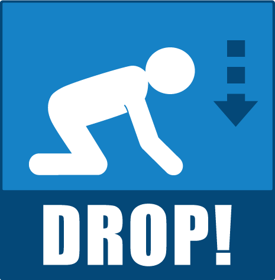
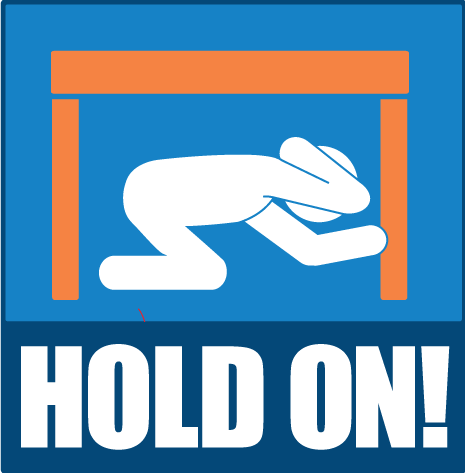

Step 1: Drop
When you feel the shaking of an earthquake, immediately drop down to your hands and knees to reduce the likelihood of being knocked over by the shaking.
Drop to the ground before the earthquake drops you.
Step 2: Cover
Take cover under a sturdy piece of furniture, such as a desk, table, or chair, to protect yourself from falling objects and debris.
If you cannot find nearby furniture, cover your head and neck with your arms and seek shelter against an interior wall away from windows or other glass fixtures.
Step 3:Hold On
Hold on to the piece of furniture or shelter you are under to maintain your protection. If you are not under furniture, continue to cover your head and neck with your arms and hold on to your position until the shaking stops.
Be prepared for aftershocks and continue to hold on to your protective position until it is safe to move.
It's important to remember the following additional tips when practicing "Drop, Cover, and Hold On"
Step 4:Stay indoors
If you are indoors during an earthquake, remain inside until the shaking stops and it is safe to evacuate.
Moving during the shaking can increase the risk of injury from falling debris or collapsing structures.
Step 5: Stay away from windows
Avoid standing near windows, glass doors, or other glass fixtures during an earthquake, as they can shatter and cause injuries.
Step 6: Stay clear of exterior walls
Interior walls are generally safer than exterior walls during earthquakes, so seek shelter against an interior wall away from exterior windows and doors.

Step 7: Be prepared for aftershocks
Aftershocks can occur following an earthquake and may be strong enough to cause additional damage.
Stay alert and ready to take protective action if aftershocks occur.